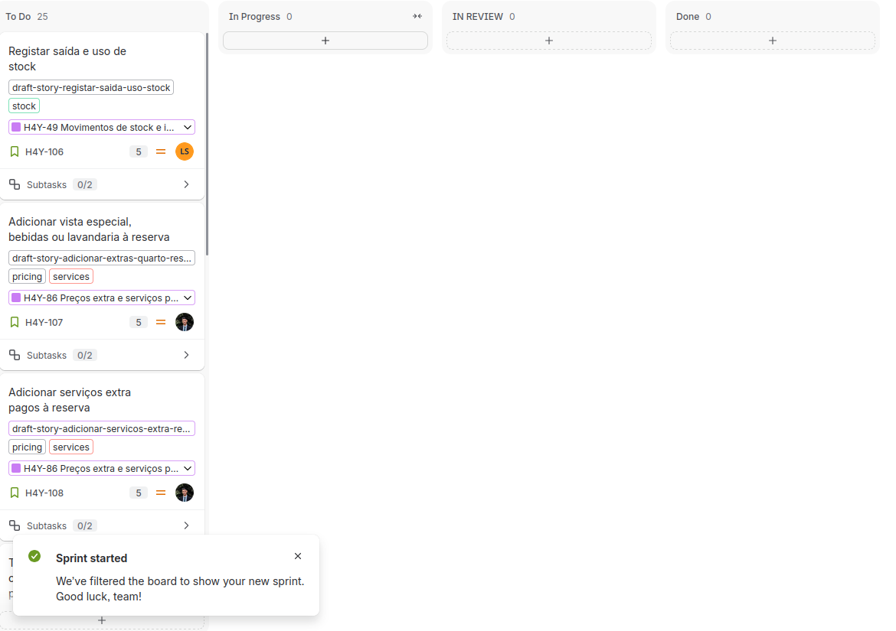

| Preparação | Reunião | Acompanhamento |
|---|---|---|
| - Rever o backlog e o resultado da Sprint 6 - Confirmar que a Sprint 6 fechou sem carry-over - Confirmar as horas de cada elemento | - Rever o objetivo e os pontos - Confirmar os responsáveis propostos - Identificar dependências e riscos - Combinar os números dos scripts SQL | - Criar os itens no Jira e atualizar o sprint e as datas - Guardar o quadro inicial - Fazer o daily scrum - Ponto de controlo a definir na reunião |
| Nome | Função |
|---|---|
| Tiago Borja | Team Leader (Scrum Master e Product Owner) e developer |
| Lukas Sperandio | Developer |
| José Cruz | Developer |
| Pedro Costa | Developer |
| António Martinho | Developer |
| Sprint goal | O gestor controla contas, stock, itens dos quartos e preços extra, e a reserva inclui restaurante e piscina. |
|---|---|
| Pontos da história | 21 pontos planeados e 21 concluídos: H4Y-87, H4Y-88, H4Y-89, H4Y-90, H4Y-91, H4Y-92 e H4Y-93. |
| Resumo | Sprint 6 fechada. Todos os itens estão em Done. Sem carry-over. |
| Data de início | 20/11/2026 |
|---|---|
| Data de término | 01/12/2026 |
| Sprint goal | Os clientes entram nos quartos, no restaurante e na piscina com o cartão magnético, e o hotel recebe o stock dos fornecedores por ficheiro XML ou JSON. |
| Sprint atual | Sprint anterior | |
|---|---|---|
| Total de dias | 12 dias de calendário; 7 dias úteis, mais o dia 01/12 (feriado), que é o dia da entrega | 7 dias de calendário; 5 dias úteis (14/11 a 20/11) |
| Capacidade da equipa | 5 elementos. Horas a confirmar na reunião. | A confirmar |
| Capacidade prevista | 94 pontos selecionados (limite aumentado pela equipa para dar o máximo de valor ao cliente). Compromisso: 67 pontos, itens 2 a 18 (cartões e importação), mais a tarefa de entrega do item 1. | 21 pontos planeados. 21 concluídos. |
| Capacidade individual | A confirmar na reunião | A confirmar |
| Estimação | Escala de Fibonacci. | Escala de Fibonacci. |
| Risco | Mitigação proposta |
|---|---|
| 94 pontos em 12 dias; a velocidade foi 21 (Sprint 6) e 26 (Sprint 5) por semana. | O compromisso são os itens 2 a 18 (67 pontos) e a entrega (item 1). Os itens 19 a 25 são extra. Ordem de corte: de baixo para cima, do item 25 ao 19. |
| A 1.ª entrega vale 35% da nota. O prazo no Moodle é 01/12/2026 às 23:59 (o enunciado indica 23:55), o último dia da sprint. Só entra no zip o que estiver integrado e testado. | Congelar a branch de entrega a 30/11 e marcar a tag. O dia 01/12 serve para o executável, o Javadoc, os diagramas e o zip. Submeter até às 20:00 de 01/12. O que não estiver integrado a 30/11 não entra no zip e passa para a Sprint 8. |
| As histórias de cartões usam as tabelas e o serviço da tarefa 1 na mesma sprint. | A tarefa 1 fecha o serviço completo dos cartões (emitir, ativar, desativar, bloquear, consultar) nos primeiros 2 a 3 dias. As histórias ficam por cima, com as regras de acesso e os ecrãs. |
| Vários itens criam tabelas novas (cartões, passagens, importações, extras, pedidos de quarto, sugestões). Dois scripts SQL com o mesmo número quebram a base de dados. | Um número fixo por item, combinado na reunião. Se um item atrasar, o número fica reservado. Cada tarefa que cria uma tabela já inclui o código para a atualizar e consultar. |
| Itens que dependem uns dos outros ou mudam o mesmo código ao mesmo tempo. | Cada assunto tem uma só pessoa, que faz todos os itens dele pela ordem da tabela: cartões (Tiago), importação (António), stock e apoio ao cliente (Lukas), extras da reserva (Pedro) e entrega (José). Cada pessoa só mexe nos itens do seu assunto. As dependências entre assuntos estão ligadas no Jira. Durante a sprint a equipa ajuda-se com revisões e testes. |
| O assunto dos cartões tem 48 pontos numa só pessoa (importação 19, stock e apoio ao cliente 12, extras da reserva 15). | Os cartões são o caminho crítico. Se atrasarem, corta-se do fim do assunto (itens 18, 17 e 15). Quem acabar primeiro ajuda nos cartões com revisões e testes, sem mudar o dono dos itens. |
| Muitos itens alteram o Permission, o HotelFacade, o menu principal e o ecrã de reservas. Conflitos de merge. | Integrar alterações pequenas e fazer rebase com frequência. Combinar os ficheiros partilhados no primeiro daily. |
| A importação precisa da biblioteca Gson (para JSON), que não está em docs/libraries.md, e a Q-59 (nomes dos campos JSON) está em aberto. Item desconhecido no ficheiro: rejeitar ou criar. | Registar a Gson em docs/libraries.md antes de usar. Usar os mesmos nomes de campos do XML no JSON até a Q-59 ter resposta. Item desconhecido: rejeitar e listar no relatório. |
| N.º | Chave | Item (título no quadro) | Tipo | Prioridade | Pontos (Fibonacci) | Responsável |
|---|---|---|---|---|---|---|
| 1 | H4Y-179 | Preparar e entregar o zip LP3-GY da 1.ª entrega | Tarefa | Máxima | 0 | José Cruz |
| 2 | H4Y-109 | Cartões: tabelas, serviço completo, simulador de leitor e cartão mestre inicial | Tarefa | Máxima | 13 | Tiago Borja |
| 3 | H4Y-125 | Importar ficheiros XML de fornecedor: leitura, validação, atualização do stock e relatório | Tarefa | Máxima | 5 | António Martinho |
| 4 | H4Y-134 | Emitir o cartão magnético no check-in | História | Máxima | 3 | Tiago Borja |
| 5 | H4Y-135 | Abrir o quarto com o cartão | História | Máxima | 3 | Tiago Borja |
| 6 | H4Y-152 | Abrir todos os locais com o cartão mestre | História | Máxima | 3 | Tiago Borja |
| 7 | H4Y-126 | Importar ficheiros JSON de fornecedor | Tarefa | Máxima | 3 | António Martinho |
| 8 | H4Y-127 | Carregar um ficheiro de fornecedor como gestor | História | Máxima | 5 | António Martinho |
| 9 | H4Y-129 | Ver o relatório de importação com os itens rejeitados | História | Máxima | 3 | António Martinho |
| 10 | H4Y-137 | Recusar o cartão em locais não permitidos | História | Alta | 3 | Tiago Borja |
| 11 | H4Y-136 | Abrir o restaurante e a piscina reservados com o cartão | História | Alta | 5 | Tiago Borja |
| 12 | H4Y-150 | Registar as passagens do cartão | História | Alta | 3 | Tiago Borja |
| 13 | H4Y-153 | Bloquear um cartão mestre | História | Alta | 3 | Tiago Borja |
| 14 | H4Y-154 | Emitir um novo cartão mestre | História | Alta | 3 | Tiago Borja |
| 15 | H4Y-151 | Desativar o cartão no check-out | História | Alta | 3 | Tiago Borja |
| 16 | H4Y-128 | Carregar um ficheiro de fornecedor como rececionista | História | Alta | 3 | António Martinho |
| 17 | H4Y-155 | Consultar os locais de um cartão | História | Alta | 3 | Tiago Borja |
| 18 | H4Y-156 | Consultar as passagens de um quarto | História | Alta | 3 | Tiago Borja |
| 19 | H4Y-106 | Registar saída e uso de stock | História | Média | 5 | Lukas Sperandio |
| 20 | H4Y-107 | Adicionar vista especial, bebidas ou lavandaria à reserva | História | Média | 5 | Pedro Costa |
| 21 | H4Y-108 | Adicionar serviços extra pagos à reserva | História | Média | 5 | Pedro Costa |
| 22 | H4Y-110 | Registar um pedido de serviço de quarto | História | Média | 3 | Lukas Sperandio |
| 23 | H4Y-111 | Registar uma sugestão ou reclamação de um cliente | História | Média | 2 | Lukas Sperandio |
| 24 | H4Y-130 | Calcular o preço total da reserva | História | Baixa | 5 | Pedro Costa |
| 25 | H4Y-131 | Consultar sugestões e reclamações | História | Baixa | 2 | Lukas Sperandio |
| Total | 94 |
